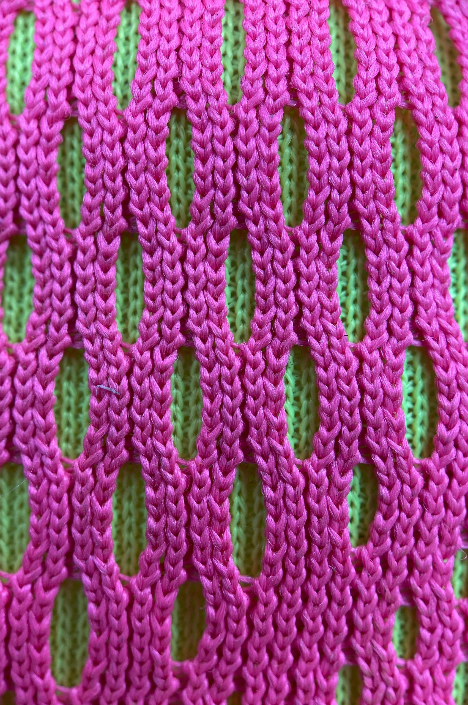
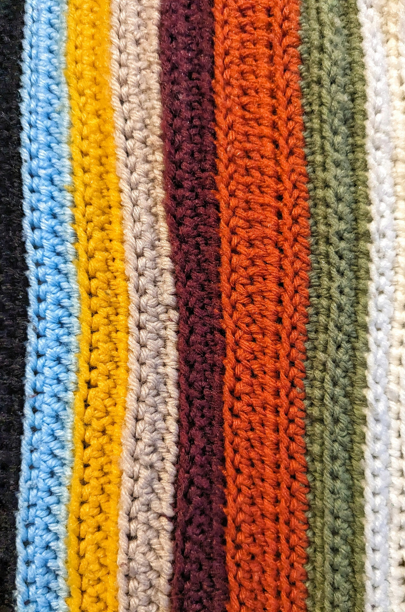
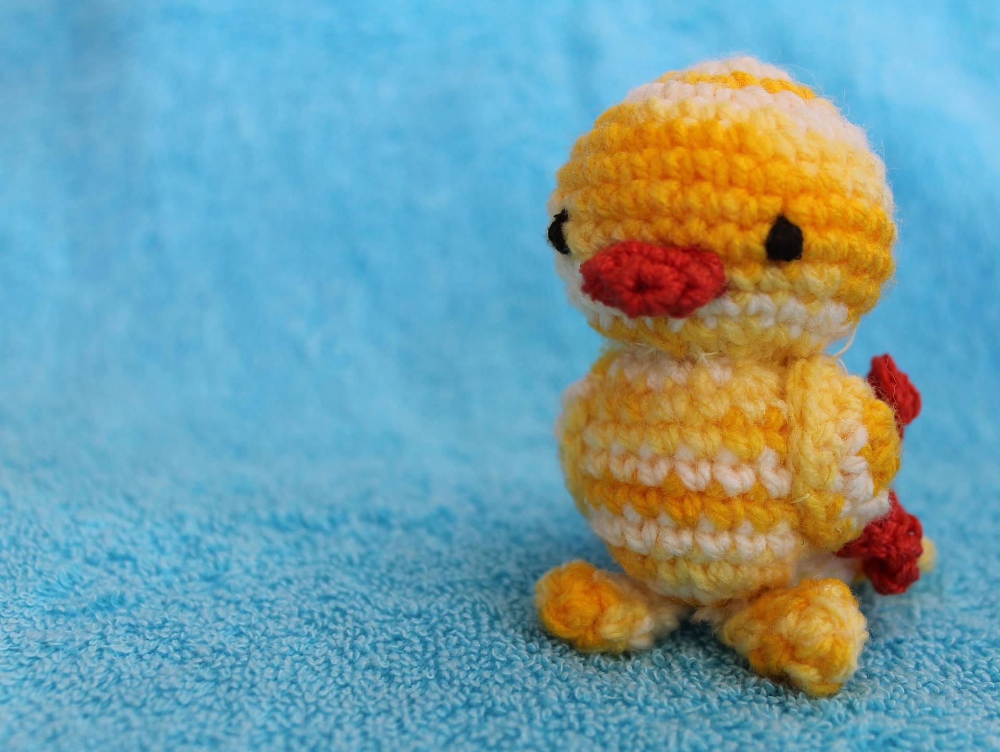
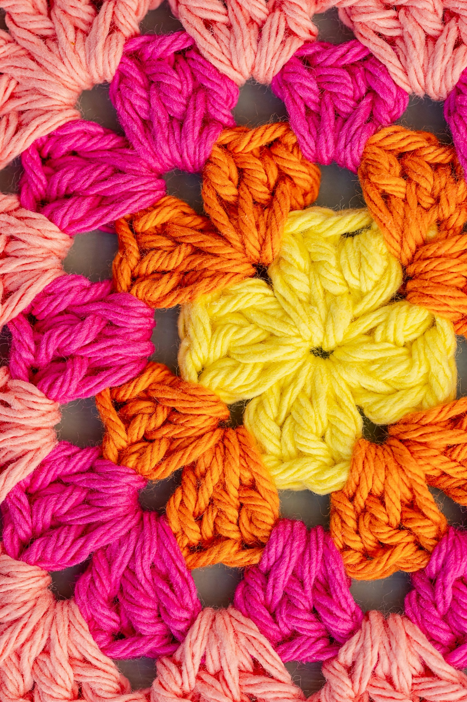
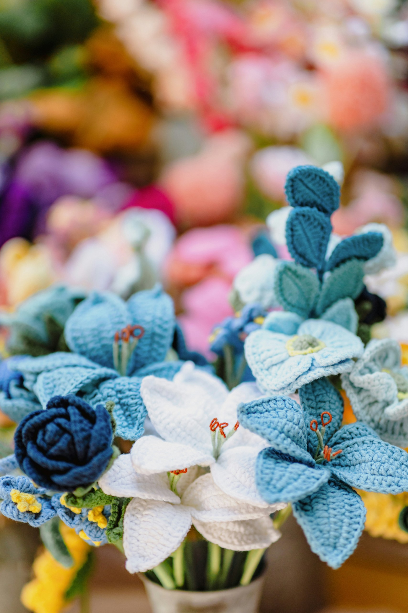
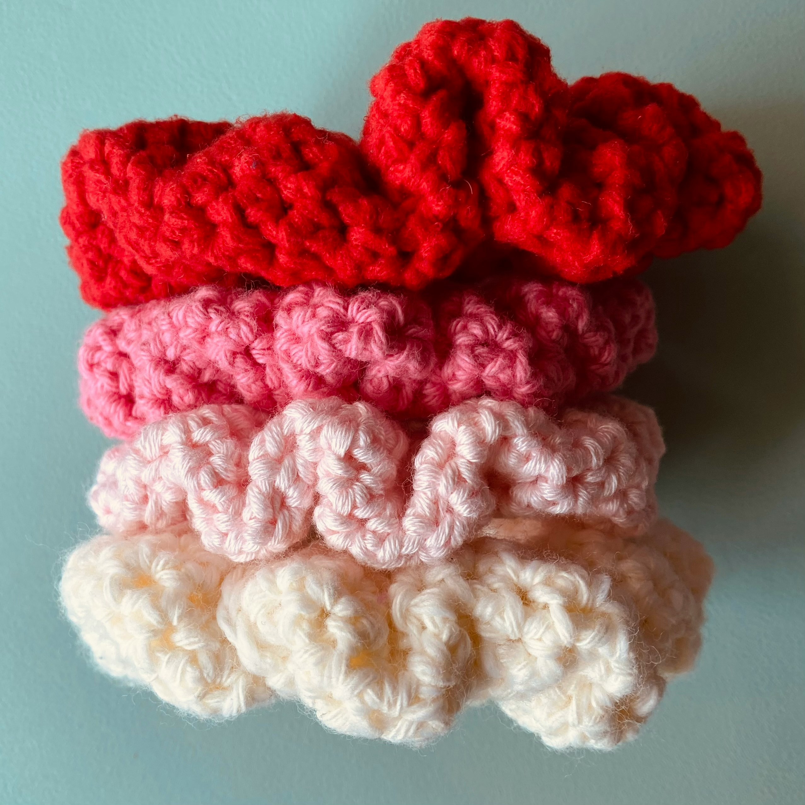
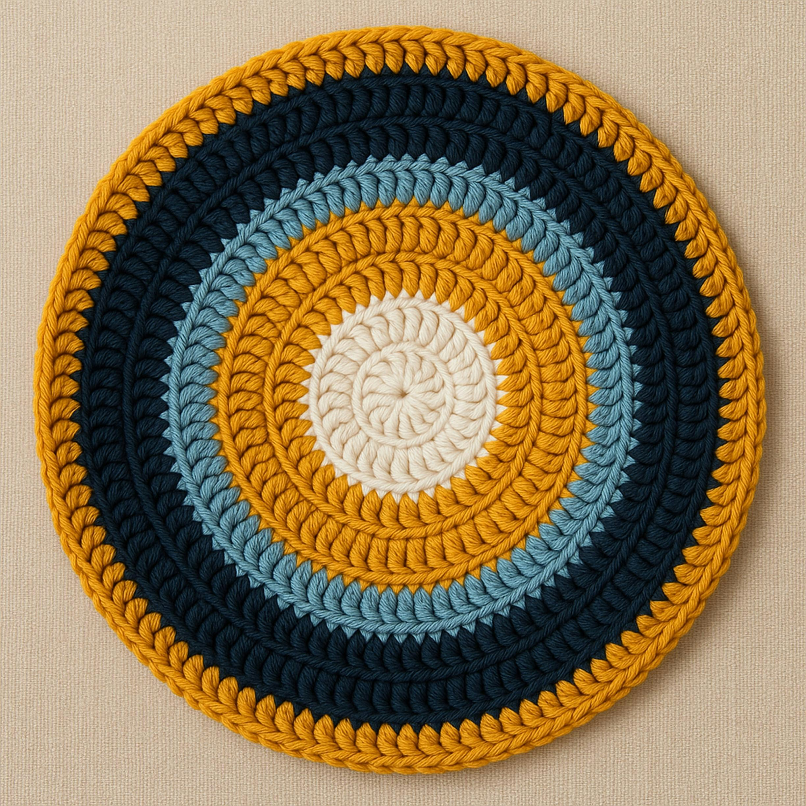
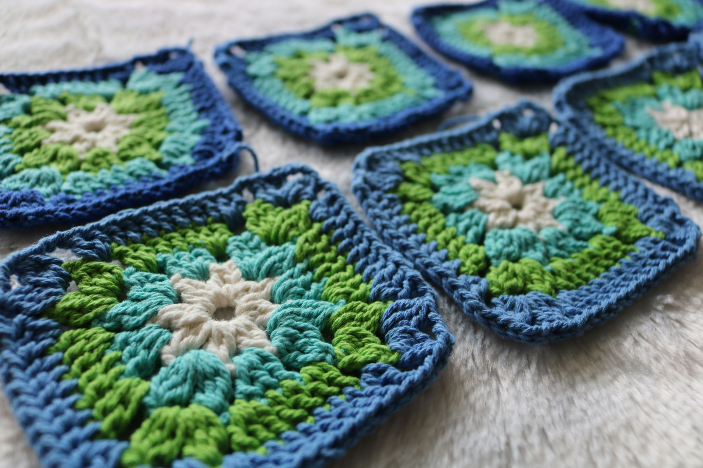
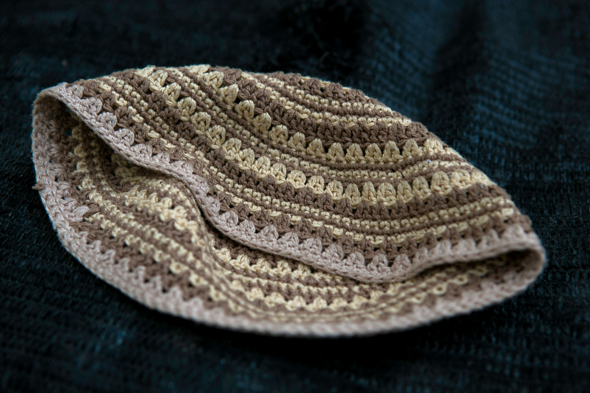
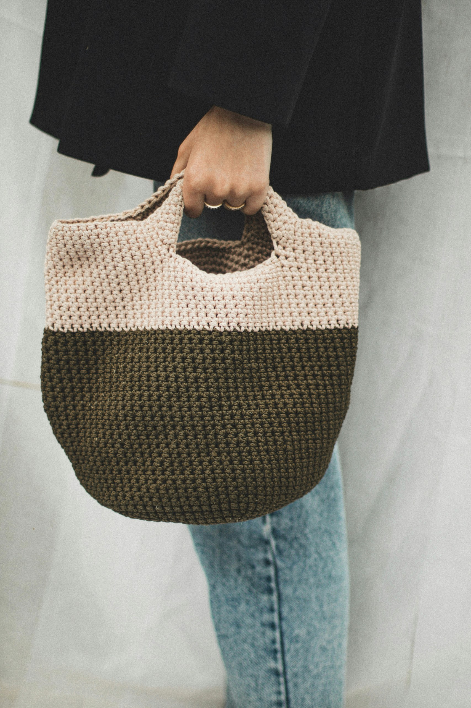

Learn crochet step by step with tutorials, tips, and beginner-friendly projects.
Learn about the basic tools every crocheter needs.
Discover comfortable ways to hold your hook and yarn.
The first step in most crochet projects
Learn how to create the starting chain for your project.

The slip stitch is one of the shortest crochet stitches. It is commonly used to join rounds, move across stitches, and create neat edges.

The single crochet is a basic stitch that creates a dense and sturdy fabric. It is often used for amigurumi, bags, and accessories.

The half double crochet is taller than a single crochet but shorter than a double crochet. It works up quickly and creates a soft fabric.

The double stitch is a popular stitch that creates a taller fabric with more drape. It is commonly used in blankets, garments, and granny squares.

A simple project that helps beginners practice chains, rows, and stitch consistency.

A fun and beginner-friendly project that teaches basic stitches and working around a hair tie.

A useful project that helps you practice stitch counting and creating neat shapes.

One of the most popular crochet motifs. It helps beginners learn clusters, corners, and joining techniques.

A beginner cap project that introduces shaping and working in rounds.

A practical project that combines basic stitches into a useful everyday item.
@ Olivia Creative Corner